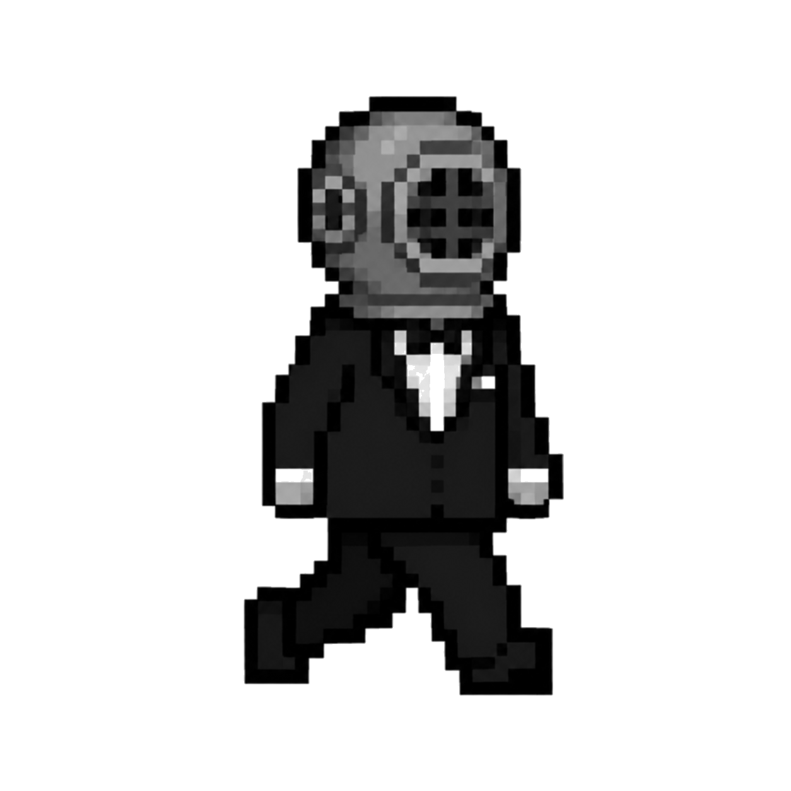
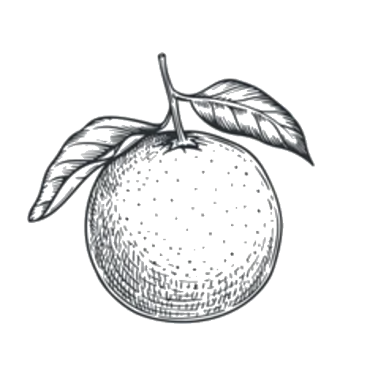

Hay algo que me gusta en cómo la tecnología está reemplazando lo que nuestra parte racional puede hacer.
Es que mi atención lentamente se está volcando hacia las cosas que llevo adentro.
* Yo
Hay algo que me gusta en cómo la tecnología está reemplazando lo que nuestra parte racional puede hacer.
Es que mi atención lentamente se está volcando hacia las cosas que llevo adentro.


Kumo tenía un frasco de vidrio con una aguja en la punta. Todos los días, antes del desayuno, lo tomaba de la repisa y se sentaba frente al bonsai. Lo miraba primero. Siempre primero miraba.
Había días de dieciséis gotas. Días de tres. Un miércoles de marzo le dio treinta y dos seguidas, sin parar, y después se fue a trabajar sin decir nada. Su hija, que vivía en Osaka y lo llamaba los domingos, le preguntó una vez cómo sabía cuántas darle. Kumo se quedó pensando. "Es como preguntar cómo sé cuándo estás triste", dijo. Ella no respondió. Él tampoco agregó nada.
El bonsai tenía cincuenta y tres años. Uno más que Kumo. Hubo temporadas en que las hojas se pusieron opacas, casi grises, y el tronco parecía más delgado de lo que debía. Kumo seguía viniendo todas las mañanas. Miraba, contaba, soltaba las gotas. A veces menos que antes. A veces más. Nunca dejó de venir.
Sus colegas en la empresa de seguros decían que Kumo era difícil de perturbar. Cuando en 2008 perdieron el veinte por ciento de la cartera en una semana, él escuchó los números, asintió, y fue a buscar un café. Alguien lo siguió para preguntarle si estaba bien. "Muy bien", dijo, y lo decía en serio.
No era que no le importara. Era otra cosa. Como si Kumo llevara adentro algo a muy alta presión, pero perfectamente sellado. Algo que no se derramaba. Que elegía cuándo salir, y cuánto.
Había días en que le daba una sola gota. La formaba despacio en la punta de la aguja, la sostenía un segundo sobre las raíces, y la soltaba. Después se quedaba mirando. No mucho tiempo. Lo suficiente.
¿Ese tono de voz lo uso yo o lo uso para que no me pregunten?
¿Por qué digo "bien" cuando me preguntan cómo estoy?
¿La ropa que elijo la elegí yo?
¿Cuándo decidí que me gustaban los gatos?
¿Desde cuándo me corto el pelo así?
¿Desde cuándo camino tan rápido?
En 1919, el botánico holandés Pieter van Elst publicó un paper de cuatro páginas en el Journal of Tropical Agriculture que fue ignorado durante décadas. Describía una anomalía observada en una plantación en Valencia: los árboles situados en los extremos del campo —los que daban a la vivienda del propietario— producían frutos consistentemente más dulces que los del centro. La diferencia no podía explicarse por el suelo, la luz ni el riego.
Van Elst propuso, con la prudencia característica de los científicos de su época, que los árboles respondían a una presencia. No dijo más.
Lo que sí se sabe —y esto es biología establecida— es que el naranjo moderno no existe en estado salvaje. Citrus sinensis es un híbrido antiguo, producto de cruces entre el pomelo y la mandarina ocurridos hace más de cuatro mil años en el sur de China. Cada árbol es, en ese sentido, una invención. Una respuesta a un deseo humano que todavía no existía cuando el árbol comenzó a formarse.
En los años noventa, investigadores de la Universidad de Murcia documentaron que naranjos sometidos a distintos tipos de música producían frutos con acidez notablemente diferente. El experimento fue reproducido, cuestionado, reproducido de nuevo. Los resultados no cambiaron. No encontraron explicación.
Lo más extraño lo anotó una de las investigadoras junior en su diario de campo, nunca publicado: que los árboles parecían reaccionar menos a la música en sí que a si había alguien escuchándola. Cuando el parlante sonaba solo, en el campo vacío, los frutos volvían a ser normales.
Hay una hipótesis —todavía sin nombre, todavía sin paper— que sostiene que el naranjo no produce lo que puede. Produce lo que percibe que alguien necesita. Que la dulzura no es un rasgo del fruto sino una respuesta. Que el árbol lleva cuatro mil años aprendiendo a leer.
Pero Van Elst dejó una nota al margen, en lápiz, en su único ejemplar del paper: había visto naranjos que dejaban de responder. Árboles que durante años habían dado exactamente lo que se esperaba de ellos —frutos perfectos, uniformes, del tamaño y el dulzor precisos— y que un día simplemente dejaban de crecer. No morían del todo. Producían, pero las naranjas eran mediocres. Insípidas. Como si algo adentro se hubiera cerrado.
Los árboles más resplandecientes que Van Elst observó en su vida, anotó, eran los que nadie había tocado en años. Los que habían crecido solos, sin que nadie les pidiera nada. Esos daban una fruta que no se parecía a ninguna otra. Irregular, asimétrica, a veces amarga en un lado y dulce en el otro. Imposible de clasificar. Imposible de pedir.
La puerta del Aureole se abre. Entra un hombre con tuxedo y escafandra de bronce. Camina despacio, como si cada paso le hubiera costado tomarlo.
Las conversaciones no se detienen. Se aflojan, nomás. Él no mira a nadie. Llega a una mesa al fondo, se sienta, pone las manos sobre el mantel.
El mozo se acerca. El hombre señala algo en la carta con un dedo. Solo eso. El mozo se va y vuelve con un soufflé de vainilla. Chico, blanco. Sin nada encima.
Abre una escotilla lateral del casco —pequeña, apenas una rendija— y acerca la primera cucharada. Se detiene un segundo antes de comer. Un segundo largo.
Come muy despacio. No mira la calle. No mira el salón. Tiene los ojos fijos en el plato como si ahí adentro hubiera algo que el resto no puede ver.
Cuando termina, la cuchara queda apoyada con cuidado en el borde. No del todo suelta. El hombre permanece quieto un momento más.
Después se para, deja un billete, y sale. La puerta se cierra sola detrás de él. El salón sigue igual. Nadie dice nada porque nadie sabe qué decir.